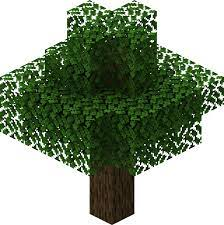
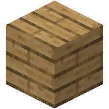
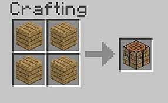
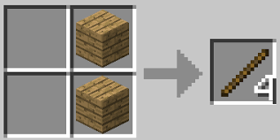
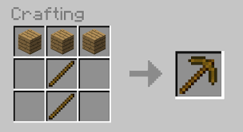
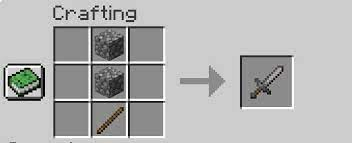
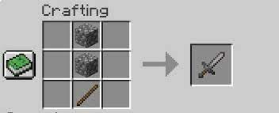

You create a survival world. You spawn somewhere in the world. Now you can't decide
where to spawn, so, The most common place in which you can spawn is the Plains biome
In our guide here, I will talk about the scenario if you spawn in the Plains biome.
So, what you have to do is to find a tree. It is very common so it is not hard at all.
There are different kinds of woods for trees. If you want to know about them, then
Click here.Now go to your inventory and craft wood planks, then
Make a crafting table. Then make sticks. Then place down your
Crafting table. This is where you can craft anything in the game. Now make a
wooden pickaxe with 2 sticks and 3 planks. Now, you hav to dig down in a staircase like
manner. When you see stone, dig around for the stone. Then, get your Crafting table and craft
a stone pickaxe, axe, sword and a shovel.
 
 Now that you have created
Now that you have createdthose, the rest is on your own. Good luck and happy mining!